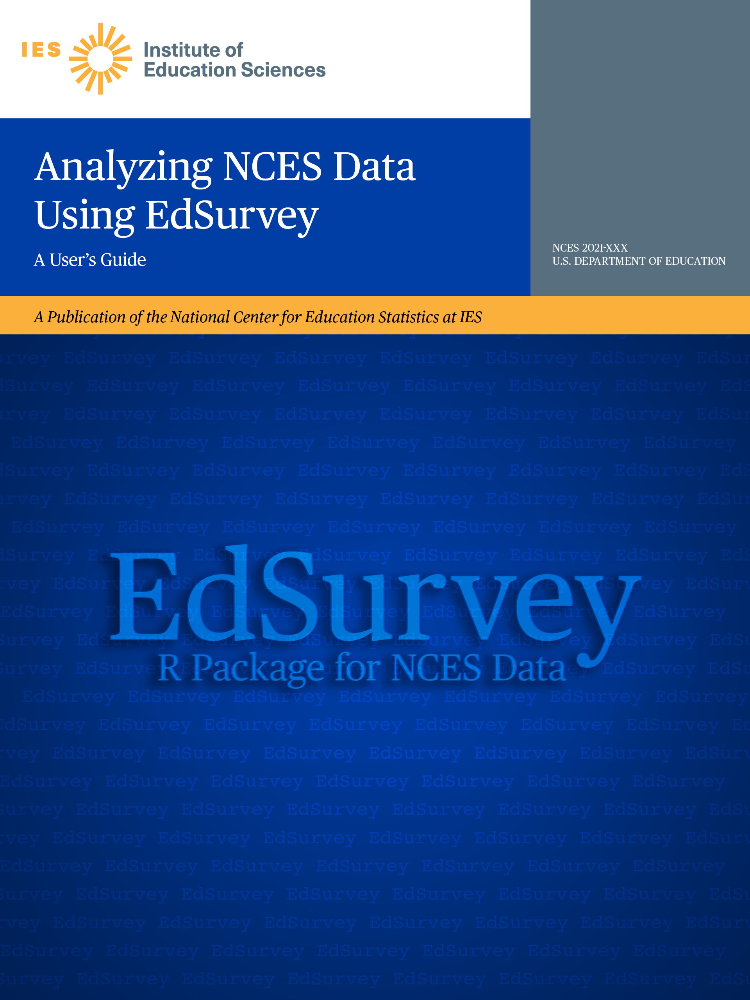

Analyzing NCES Data Using EdSurvey: A User’s Guide

0.1 Learning to Use EdSurvey
This user’s guide is intended for skipping around; the information is not ordered sequentially. To find help and see examples for a specific function, the question mark function allows users to get help about a function. For example, at the R prompt, after installing and loading EdSurvey, a user can get help about the downloadTIMSS function by typing ?downloadTIMSS.
0.1.1 Available Resources
Visit the EdSurvey page at AIR.org for a full listing of EdSurvey resources.
0.1.2 Trainings
The EdSurvey development team provides periodic workshops on the analysis of national and international education data. To learn more about these course offerings,
- apply to the NAEP Data Training Workshop
- explore the available courses at the American Educational Research Association and IEA International Research Conference sites
0.1.3 Contact and Bug Report
Please report bugs and other issues on our GitHub repository at https://github.com/American-Institutes-for-Research/EdSurvey/issues.